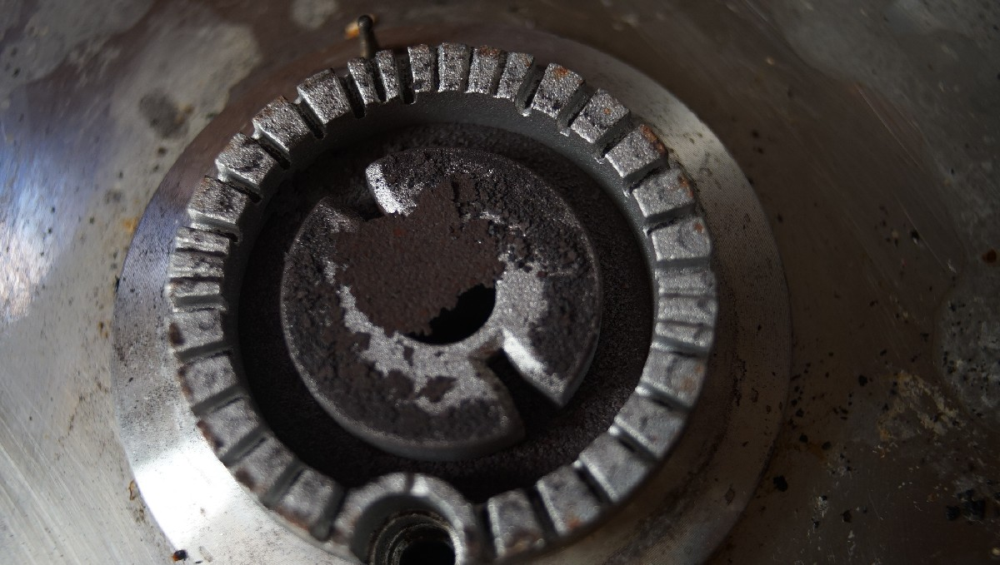

off the grid
- water
- rain
- shower
- power
- provisioning
- productivity
- medical
- internet
- formalities
- receiving mail
- lpg
- waste
- distractions
- radio
- hardware
- software
- data storage
- heating
- washing dishes
- laundry
People choose to live off-grid for self-sufficiency, resilience, or ecological reasons. For us, to live off-grid, is mostly letting go of the numbing culture of convenience and surrounding ourselves with systems we trust for long transits across the ocean. When far away from the coasts, we rely on our vessel and what's on it. When something breaks, we must repair it. We found that learning to live in communion with our vessel offered a peace of mind previously unimaginable.
Maslow's pyramid of needs positions as the most basic, or most crucial, physiological needs, like water, food, warmth and rest, followed closely with security and safety. Meeting these basic needs, while living offgrid, takes but some planning and time.
water

It's easy to forget that water is not inexhaustible when it flows so readily by the turn of the tap. Living on a boat certainly helps to develop a deeper connection to this precious resource. Depending on where you are, you'll have to treat it, catch it, carry it or pay for it.
In an emergency, the WHO recommends 10-15 liters a day per person(7.5L of which ought to be treated water), for washing, drinking, cooking, with 2.5 and 3.5 liters of that amount alloted as drinking water(per person) each day. At sea, being frugal is important, most small cruising boats do not having the carrying capacity for this amount of water. When we sailed for 52 days at sea between Japan and Canada, we left with 320 L of water, leaving us with 3 L per day per person(we didn't use all of it). We use up an average of 2.5 L per day per person, but only because we didn't do laundry, caught extra rain water underway, used a pressure sprayer to do the dishes, and because we bathed lightly. When anchored near a port, once a week, we would ferry four bins of 10 liters from shore to the boat. To conserve water, our sink faucet is operated with a manual pump, where each pump draws out approximately 60 ml of water, allowing us to measure our usage.
Carrying separate bins makes for a more resilient system. If salt gets into one tank it won't corrupt the entirety of your supplies. While traveling we met a delivery crew on a sailboat, bound for South Korea, that were forced to drink coconut water after a bad seal allowed salt water to contaminate their only water tank onboard. A sure way of preventing contamination, is to check all o-rings and tanks for leaks before leaving. We chose not to have a desalinator aboard Pino, and have managed well without it. It's a device that is expensive, high maintenance and power-hungry.

Our main water tank carries 170 L (45 US gal), our secondary has 50 L (13 US gal), while an additional 100 L (26 US gal) is stored in separate bins(4 x 1 L + 3 x 20 L).
In 2020, before the passage from Japan to Canada we replaced the holding tank with a water tank (see tank in below photo). We didn't have many options, but found a small water tank typically used in a lorry in Japan.

When it is not possible to dock at a marina, we use smaller 10 L (2.6 US gallons) bins to ferry water from shore. While it requires more trips, the lighter containers are less prone to breakage. When filling up, we filter the water.
Treating water
The best method for disinfecting water is to boil it for 1 full minute(At elevations over 2,000 meters (6,500 feet) boil water for at least 2 minutes).
If boiling is not possible, it is necessary to filter the water prior to treating it with iodine or bleach.
Filter
Find a filter that is 1 micron absolute or smaller with a NSF/ANSI 42 or NSF/ANSI 53 certification. See all certified products.

On the boat, to filter our tank water, we hook a twin set of filter housings in the line to purify the water. The 1st stage filter is pleated, and removes sediment, silt, dirt, rust, and other particles, and the 2nd stage carbon filter reduce the content of chlorine, concentration of toxic heavy metals, natural organic matter and oil products. This option is only possible when filtering from a pressured tap at a dock.
We also carry a 6-cup Brita pitcher to filter the water coming out of the faucet. We do this because the tank isn't always 100% clean(ours is damn hard to clean). A large Brita unit would be better, but we do not have the storage space for a 32-cup, and the 6-cup is short so it isn't likely to tip underway (easier to store than the taller pitcher). There aren't many good filter alternatives on the market currently for portable, low-power systems, we chose Brita because it's widely available, even if replacement filters aren't the most affordable.
In a bind, if we can't get a good filter to remove debris/impurities, we run the water through a coffee filter. When filtering rain water we like to put a funnel over a large container, and to line it with a coffee filter. The filter will eventually get saturated (especially if the water is dirty), and the flow of water will slow down, in which case it may be necessary to replace the filter. We used this technique often when filtering rain water after a passing squall while in the South Pacific Islands. We used this water primarily to wash dishes, clothes, or our bodies, not for drinking.
For more low-tech options, check out this ceramic filter, or the 3 bucket water filtration system. We have not tried either of these options and cannot vouch for their practicality on a boat.
Household bleach(Sodium hypochlorite)
Chlorine is the most commonly used disinfectant in the world for treating drinking water(WHO, 1997) owing to its effective and efficient germicidal properties, ease of application, measurement, and control, persistence, and low cost. Note that bleach works best when added to warm water.
If the water is clear and of a temperature of 20˚C (68˚F), the suggested ratio of chlorine to water is...
- With 5.25% Sodium Hypochlorite: 2 drops(0.1 mL) bleach for 1 L.
Allow the treated water to stand for 30 minutes(if adding water to a tank, do not put a cap right away, let it breathe). If there is a lingering chlorine smell and the water looks clear, it is safe to drink, if not, add another 2 drops. Let the water stand for another 15 minutes
If the water is cloudy or if the temperature is colder than 10˚C (50˚F), double the above suggested ratios of chlorine drops to water.
Mix, and let it stand for 1 to 2 hours before drinking. The longer the treated water stands the better it works to disinfect the water. If after that time there is no chlorine smell, add 4 more drops and let it stand for an additional 1-2 hours. If there is a lingering chlorine smell and the water looks clear, it is safe to drink.
Things to remember:
- Use fresh liquid bleach (less than 1 year old).
- Use NSF-approved chlorine bleach products that is suitable for disinfection and sanitization(indicated on label).
- DO NOT use non-chlorine bleach that is scented, colour-safe, or that has added cleaners.
- Bleach doesn't remove chemical pollutants or disease-causing organisms (but in an emergency, if there is no way to boil it, it is better than nothing).
- Use a dropper for more precision when adding bleach.
To measure different ratios use this calculator.
It is possible to use purification tablets, but this may not be ideal if you need to treat a lot of water. For daily use we find these expensive and impractical.
Iodine
Another option for treating water is to use liquid iodine(2%), or tablets, available in most drugstores. If using tablets, follow the directions on the package(usually 2 tablets per liter of water). Note that we have not tried this, because bleach is more readily available and because it is effective.
Liquid iodine works best with 20˚C (68˚F) water.
Treating water above 15˚C: add 5 drops(0.25 ml) of iodine to 1 L of water. Mix both together, and let it stand for 30 minutes before drinking.
Treating water between 5˚C and 15˚C: use the same ratios as warm water, but let it stand for 40 minutes before drinking.
Treating cloudy water: add 10 drops(0.5 ml) of iodine to 1 L of water and let it stand for the times listed previously for both cold and warm water.
rain
Rain catchment is a good way to top-up your tanks. Some sailors set up tarps to catch and lead the water into Jerrycans, others have the water flow directly into their main tank — we don't recommend doing that unless you've got a good filtration system. When it rains, we collect water trickling down from our aft solar panel, or from our inverted cockpit tent (see below picture, see pictures of our boom tent), into bowls or directly into Jerry cans. We collected this extra water for showers, laundry and washing dishes.

While the rain itself might be safe to drink, it carries dirt or whatever may be on your tarp, or deck. And depending on where you are, the rain may have environmental pollutants mixed in. For these reasons, I recommend using rainwater for purposes other than drinking and cooking. If you are to drink it, it's important to boil it first for at least 1 minute, or to run it through a good filter. See water.
Even if you don't plan on drinking it, it's a good idea to treat the water you catch. Before treating, make sure to filter debris out of the water.
shower
Coastal locations like marinas and public beaches often have fresh water showers for local swimmers or marina guests. Usually free, or available for use at a nominal fee (1-2$ for 5 minutes). Most times these showers operate on a timer. We don't have a shower system on Pino, the space doesn't allow for it and besides, we think it would use up too much water when at anchor.
In the summer, or when in warm places, we use a pressurized sprayer as a shower. It uses little water and can be found in most hardware stores (don't buy a used one, there may be lingering chemicals). During our north pacific ocean crossing, we use the pressure sprayer to wash dishes to further save on water. When showering on the boat we don't use soap. When water is scarce, we bathe in salt water, and rinse with fresh water.
In the winter, if we have no land access we heat up water on the stove and clean ourselves with a bucket and rag. We don't shower daily, maybe twice a week (depending on activity level).
power

Halving requirements is the same as doubling capacity.Nigel Calder
There are working alternatives to most powered devices on a boat. Keeping consumptions low reduces the need for extra solar, keeping costs down and reducing the amount of things that can break, or fail.
To measure current power usage, make a list of indispensable electric systems and their energy requirements, including lighting, appliances, laptops etc. Look up their power usage in watts, for example, a Macbook Pro (models vary) might draw 60 W when in use. If in use for 6 consecutive hours, it would draw roughly 360 Wh per day. Wattage varies depending on the task performed on the computer, for instance video editing is more resource intensive than writing. The type of computer you have affects the amount of energy consumption overall, and the more external hardware you connect to it the more power it will consume. Adding up the wattage will give a rough estimate of daily use. Batteries have an amp-hour rating that can help calculate the energy available to you, to learn more about this read about batteries.
The energy coming from solar panels fluctuates based on the angle of the sun, cloud coverage and other obstructions. Power usage aboard varies a lot from day to day, depending on what task is done that day. While on passage, our own capability to capture sunlight is reduced to keep our windage low, but our energy consumption is equally reduced for not much else is drawing power than our navigation electronics like the AIS, the wind meter, and at night, the lights.
An anchored board will orbit its anchor according to the wind, and rarely stays in the same spot and so it is difficult to position panels to guarantee an optimal draw. On cloudless days the mast may cast a shadow covering a large part of the panels. On moments such as this, or cloudy days, it is best to adapt by using appliances less, and to learn to live according to the weather.
A people can be just as dangerously overpowered by the wattage of its tools as by the caloric content of its foods, but it is much harder to confess to a national overindulgence in wattage than to a sickening diet.Ivan Illich
For each 100 people telling us to "just install more solar panels", only 1 person will consider ways to reduce power usage. Instead of scaling our battery banks to our needs, we chose to adapt our needs to the available space for batteries and surface for panels. It's also important to consider that more solar panels often mean more windage. Having a complex system exposed to a harsh environment like the sea, creates opportunities for things to break. Saltwater corrosion is a very real threat. Nowadays, many electronics, or 'smart' systems, use proprietary parts, making them difficult to repair. We've encountered many boats, stuck in port for weeks and weeks, waiting for parts to arrive. An over-reliance on convenience products may bind you to services on land, in a way that you may not want.
medical

Most city-centers will have a hospital. Ones out in the islands—South Pacific for instance—tend to be good and cheap, but in most cases you must be self-sufficient. That includes a well-stocked medical supply, and the know-how to fix yourself up.
Before going offshore, if you can, we recommend doing a first-aid course. Knowing what to do in the event of severe bleeding, choking, or severe allergic reactions, could save your crew's life.
In a marine environment, it may not be possible for EMS personnel to come to your assistance in an emergency. You may need to contact a doctor and request advice on providing care, even if it is outside of your training. Read about calling for help on a boat. Document the doctor’s orders carefully.
You should prepare the following information and present it to the doctor:
- Routine information about the ship
- Routine information about the person
- Details of the illness/injury
- Care rendered and the person’s response to that care
Read on what to do to protect yourself against malaria, and see what to do in the event of jellyfish stings, sunburns, or hypothermia.
DAN BOATER
In case of a serious injury, you must have the means to get yourself to the nearest clinic. We use DAN Boater, a repatriation insurance that covers helicopter/transportation fees.
MEDICAL RESOURCES
We find that medical apps for mobiles, and FM army field manuals, are helpful when dealing with minor burns, cuts and various aches. If you have a smart phone, the Canadian Red Cross app is free, works offline, and is very good.
We also recommend:
- The downloadable guides by Riot Medicine
- A Barefoot Doctor’s Manual: The American Translation of the Official Chinese Paramedical Manual(an excellent general health manual)
first aid kit
Basic First-aid kit:
Clearly mark the first-aid kit with a red cross, and make sure everyone aboards knows where it is. Keep a list inside of the items you use, and be sure to top off the kit every year or so. Also, see ditch bag.
Do not get all of the items below without doing thorough research yourself. You may not need all of these items. Do not blindly buy a pre-made kit, make a list of likely ailments and situations and get good quality medicine and first-aid kit items individually(sourced in-person from local pharmacies).
Make sure that you understand how to administer medicine, or to practice wound care, to a patient before attempting it. Take a first-aid course, read manuals, etc.
We'll say it again, when assembling a first-aid or a medicine kit, consult rigorously peer-reviewed scientific research, make a list, and get individual items suited for your unique needs and situation.
Check out our illustrated notes on building a first-aid kit on Rabbit Waves.
- Sterile gauze pads(Small & large squares to place over wounds. Must be secured with medical tape, surgical tape, or safety pins)
- Medical tape(To secure dressings, to hold medical devices on the body, such as a catheter, to protect areas against chafe, etc.)
- Surgical tape(A stronger, very sticky, tape to close surgical incisions, to secure dressing, for makeshift bandages, e.g, 3M Transpore)
- Roller and triangular bandages(To hold dressings in place or to make an arm sling)
- Adhesive bandages(Assorted sizes, e.g, Elastoplast, Opsite & Compeed)
- Medical scissors
- Tweezers(For removing ticks, to manipulate sutures, or for other delicate medical tasks)
- Safety pins(To tie off bandages, and multiple other uses)
- Instant ice packs
- Instant heat packs
- Disposable non-latex gloves(Such as surgical or examination gloves)
- Burn care dressing(To care for minor burns. Water Jel, Burncare, Alocane, Second Skin, etc.)
- Antiseptic wipes or soap
- Pencil and pad
- Permanent marker(To write medical information on skin or other materials)
- Emergency blanket
- Eye patches(Worn when healing from surgery, an injury, or an eye disease)
- Thermometer(Forehead strip, and/or full-sized thermometer)
- A good first-aid manual
- 5% vinegar(See jellyfish stings)
Basic Medicine kit:

Always read about a medicine before using it. If administering medicine to another person, ask about their allergies, past medical history, last oral intake, etc. Some medicines can cause severe allergic reactions, or may interact with other medicine(e.g,: Ibuprofen is contraindicated for anyone with heart issues, regardless of their age).
Note: For very strong over-the-counter pain relief, combine variations of paracetamol, ibuprofen and codeine, paying attention **not to double dose** with paracetamol.
Never administer anything to anyone without their consent.
- Antifungal cream(Yeast infections, e.g. Canesten)
- Laxative(Oral. Constipation relief.
- Ibuprofen(Oral. Minor pain, fever reducer, e.g., toothaches, menstrual cramps, and headaches)
- Aspirin(Oral. Pain, fever, inflammation reducer, e.g., to treat and prevent heart attacks, strokes, and chest pain)
- Antihistamines(Allergy relief)
- Anti-nausea(Scopolamine patches, dimenhydrinate/dramamine, Meclizine, Promethazine, and Ephedrine)
- Ear drops(To treat pain, inflammation, infection & earwax blockage. There are different formulations for each ailment)
- Eye wash and solution
- Insect repellant(Must include picaridin[also known as icaridin], DEET, ethyl butylacetylaminopropionate [IR3535], or oil of lemon eucalyptus[containing p-menthane-3,8-diol, PMD])
- Hand sanitizer(60-95% alcohol content)
Details
To reduce germs on skin, aim ethyl alcohol or isopropyl alcohol. To protect against diarrheal illnesses, including rotavirus and norovirus, wash hands with soap and water instead. - Hydrocortisone(To combat inflammation, severe itching. Used topically for allergic rashes, eczema, psoriasis, itching, and other inflammatory skin conditions, & to treat hemorrhoids[as a suppository])
- Calamine lotion(Insect bites, mild itchiness)
- Topical anesthetic
Details
To reduce pain, or itchiness on the skin, eyes, the inside of the nose, ear or throat, the anus and the genital area(different formulations for each area). Topical anesthetics come in creams, ointments, aerosols, sprays, lotions, and jellies. Examples include benzocaine, pramocaine, butamben, dibucaine, lidocaine, oxybuprocaine, pramoxine, proxymetacaine (proparacaine), and tetracaine (also named amethocaine). - Antibiotic(Oral. To treat bacterial infections, traveler's diarrhea, & gastrointestinal infections, e.g, amoxicillin, azithromycin, cephalexin, and ciprofloxacin)
- Acetaminophen/Paracetamol.(Oral. For severe pain relief, fever reducer. Has the least side effects, e.g, padanol, tylenol)
- Topical antibiotic(Ointment & powder, e.g. Bacitracin, Polysporin, and Neosporine. Topical ointment. Prevents infection. For minor scrapes, cuts, and burns. Powder is useful for bad burns that are too painful to touch, and to prevent infection in deep cuts)
- Sunscreen(SPF 30)
- Hydrogen peroxide, 3% dilution(Wound disinfectant. Good for initial cleaning, not for prolonged use on the same area. Antiseptic, useful to sterilize tools & surfaces)
- Aloe vera gel with lidocaine(Burn relief)
- Antidiarrheal(For diarrhea relief, e.g., s loperamide like Imodium, diphenoxylate, bismuth subsalicylate like Pepto-Bismol, cholestyramine, and octreotide)
- Hydration tablets/powder or salt tablets(Post-sickness, or dehydration replenishment of minerals and salt, e.g, Dioralyte sachets, Phizz hydration tablets, saltstick dispenser)
- Anti-chafe cream(Protects skin against irritation due to chafing, moisture, ill-fitting clothing, physical activity, heat and humidity, etc. Look for products with combinations of cocos nucifera, glycerin or caprylic/capric triglyceride, aloe vera, zinc oxide, cornstarch, vitamin E, and kaolin clay)
- Antiseptic cream(Prevent infections caused by minor cuts, scrapes & burns, e.g, Savlon Cream)
- Distilled water(Clean water when cleaning wounds, or washing down medical equipment)
- Rubbing alcohol(Isopropyl and water. Antibacterial. Used to disinfect wounds with a cotton pad, tools or surfaces. Will evaporate quickly, don't use on varnished wood)
- Zinc Oxide cream(For skin irritations, like chafing and sunburns. It helps in wound healing in preventing bacterial infections, to lock-in moisture, as sunscreen, etc.)
- Decongestant nasal spray
- Codeine
Details
To treat mild to moderate pain. Possible to combine with paracetamol (as co-codamol: e.g., brands Paracod, Panadeine, and the Tylenol-with-codeine series, including Tylenol 3 and 1, 2, and 4), with aspirin (co-codaprin), or with ibuprofen (Nurofen Plus). These combinations provide greater pain relief than either agent alone.
Add-ons:

- Hot water bottle(For hypothermia)
- Staple gun(For closing up wounds)
- Epinephrine(Vials, or Allerject/AUVI-Q. Avoid EpiPens, they are grifters)
- Tourniquet
- Hemostatic dressing with coagulant(To cover and stop severe bleeding, like head wounds, e.g. QuikClot)
- Emergency bandage(Also known as Israeli bandage. Possible to apply one-handed, to oneself. Designed to apply pressure to a wound, easy to secure in place)
- Scalpel with sterile blades(To remove splinters, boils, etc.)
- Multitool
- Irrigation syringe(In wound irrigation to remove debris and bacteria, during medical procedures to flush fluids or medications into specific areas of the body, and for ear and nasal irrigation to remove excess earwax or nasal congestion)
- Compression bandage(To treat sprains or strain, helps to reduce swelling)
- Reinforced sterile skin closures
- CPR pocket mask
Details
To protect both the caregiver and the patient at risk of exposure to body fluids when performing CPR. It also creates an airtight seal over the patient's mouth and nose. A one-way valve allows air to flow into the victim’s lungs while also keeping the caregiver cut off from the patient’s air, spit, blood, vomit or other fluids. Not only does this help keep the nose closed, but it also protects against the transmission of bacteria, viruses, and diseases during this procedure. - Povidone surgical scrubs(Iodine. Antiseptic. Used to reduce bacteria on the skin prior to surgery or patient care, or for handwashing)
- Sterile sutures(Thread with needle)
- Emergency dental kit
Details
- Debacterol(For canker sores)
- Zinc Oxide Eugenol cement(For temporary cementation of a prosthesis)
- Light cure cavity liner
- LED curing light
- Hemostatic dental dressing(E.g., HemCon. Oral wound care, like after tooth extraction, or trauma), braided cotton rolls(to absorb saliva/fluids to keep operative areas free of excess moisture)
- Single use sterile syringes and barrels
- Dental mirror
- Medicated paste(For dry socket, oral pain relief, usually contains eugenol, e.g., Orca)
- EMT toothsaver(Formulation to store a knocked-out tooth and protect it from cell damage and dehydration until dental care is available)
- Local anesthetic injection(Marcaine HCI 5% with epinephrine anesthetic carpules)
- Topical local anesthetic(LolliCaine 20% Benzocaine Gel, for fast temporary relief during periodontal curettage, local injections, scaling, root planing and other dental procedures)
- Periodontal surgical dressing(Provides protection over injured tissue, e.g, Barricaid)
- Headlamp
- Etc.
The information on this page was primarily advised by a great numbers of sailors we've met throughout the years, on our travels, but also online, many of whom put their own kits together with advice from a doctor. We've also gathered information from mountaineers, trusted adventurous friends, and street medics.
Thank you SY Maya, SY Totem, CC O'Hanlon(sailor), Andy Kirkpatrick(Mountaineer), Riot Medicine, Paul G. Gill Jr. M.D., people on the Fediverse, and The Canadian Red Cross with whom Rek did first-aid training with.
internet

Internet access is the woe of any working nomad. Internet is sometimes spotty, and data in some countries is slow, expensive, or limited to small blocks at a time. While circumnavigating the Pacific, we amassed sim cards, pocket WiFis, and have often used connections from businesses on land. Overtime, we found ways to lessen our dependence on the internet, and to save on bandwidth.
With limited access, it is important to use online time wisely. Prior to connecting we make a list of tasks that we must do, such as pushing updates and making backups of our data online. When searching for help online, we disable javascript and use lightweight search engines, such as ddg.gg/lite. When checking social media, we disable auto-playing videos and image previews to save bandwidth.
When we have a reliable internet connection, we gather copies of all the online material we will need. We keep offline versions of entire websites, writing guides, articles and even whole sections of Wikipedia (using wget) If we find ourselves without a connection, we can still solve our problems by using our offline mirrors. By the way, you can download our entire website.
To reduce your bandwidth usage and battery drainage, install NoScript, and uBlock on your browser; or use a text-only browser like Lynx.
We research our destinations ahead of time to make sure we’ll have a reliable connection when we need it. This means we’ll be spending less time in secluded areas, and more time in city centers near a cell tower or WiFi signal. With some planning it is possible to have both paradise and connectivity, we found such a place in Huahine (see internet in paradise) in French Polynesia, and again in Fiji. Internet access will only get better as far-flung island nations gain purchasing power.
On long passages, we use a Satellite phone to request weather data using Saildocs, with it it is also possible to download webpages.
formalities

Passports are a global requirement for international travel, but their value varies depending on the holder’s country of origin. Passport privilege means that a Japanese national will have free roam over all continents, while someone from Afghanistan will likely be barred entry outright. Inequalities related to passport privilege means that many will face discrimination, and will be forced through a tiresome process of applying for a visa—all of which costs money, time, and energy. It is not fair. Everyone should be granted the same rights, but wishing things to be different does little to alter reality. The best thing to do is to stay informed, and to be ready.
It is important to read about the formalities of each country before visiting, because applying for visas can take a lot of time. Some countries may grant a visa on arrival to certain passport holders, but never assume this, do your research.
Customs in certain countries (like New Zealand or Fiji) sometimes require an Advance Notice of Arrival. A failure to send this document before arriving might result in hefty fees. Most countries have designated ports of entry for visiting yachts, usually a port with a customs, immigration and quarantine office.
Upon arriving in the country, fly your yellow quarantine flag (we just hang a yellow cloth with clothes pins, see above picture hehe) and proceed to the quarantine anchorage, or dock. In some cases, you might have to hail the Port Authority on VHF to announce your arrival. They will not allow you to touch land until you're properly checked in. Countries like New Zealand and Australia demand that your vessel's bottom be clean (they will require proof), to avoid introducing invasive species into its home waters.
Some countries will give visa extensions, but plan appropriately and apply long before it is set to expire. If your boat needs repairs, or cannot leave due to weather, you may be allowed a short extension (for a price).
Upon entry or departure, you may need to pay the immigration, customs, health and quarantine officers. These fees are documented, it is best to learn what prices to expect before arriving. We find Noonsite to be a good up-to-date ressource for country-specific information on fees, customs or quarantine procedures.
receiving mail
There is no simple answer to receiving mail when living on a sailboat, and options relying on services are specific to each country. Whenever possible we go paperless, and we rely on friends and family on land to receive important mail. They scan and send some letters digitally, and when we find a place to receive mail(marina, post office, friend in another country) they bundle our letters and send them to that address.
When in another country, we rely on marinas to receive packages. In our experience, they are usually okay with foreigners doing this, especially to order boat parts.
Canada-specific options
We have more to say on receiving mail in Canada since it's where we're from, and because we've spent a lot of time living on a boat there. Most marinas will not allow transients to use their address to receive mail, but local yacht clubs may help a foreign-flagged boat. Liveaboard marinas will accept packages for you if you live on their docks, although there are very few of these nowadays... and their numbers are dwindling.
Flex Delivery with Canada Post. If the plan is to stay near a specific location for a long period of time(or if you return there often enough), it is possible to have packages shipped to any Canada Post location using Flex Delivery. Having items shipped that way doesn't cost anything extra. The downside is that they only accept parcels, not letters, for letters see Poste Restante. Flex Delivery also doesn't accept courier mail(Fedex, UPS) and the service requires that you have a permanent home address to sign up(we again relied on our friends for this).
Poste Restante. When traveling within the country Canada Post allows the use of any post office to receive mail for you. "Travelers can receive mail for up to 4 months at any Post Office. Apply in person at each Post Office where you would like to receive your mail and request an application for general delivery service(poste restante). There is no charge. Please bring government-issued photo identification, even if issued by a foreign country."
UPS mailbox. Since we spent 4 winters in Victoria, we've shared a UPS box with 2 other sailor friends which permits us to receive packages from all shipping carriers. A UPS mailbox provides a street address, which gives more shipping options than a PO box. Getting a mailbox with UPS is not the cheapest option($18-25/month, prices vary per location), but sharing it makes it more affordable. This option only works if you spend part of the year in one place.
A permanent business address. For those who liveaboard near a city, it is possible to rent a virtual office to receive mail. This option is good for those who work from their boat and require a permanent address for their business. For example, our friends on the sailboat(SV Bloom) use the Paramount Executive Center in Victoria B.C. as a permanent address for their business(it acts as a virtual office) and to receive mail, but it's pricey($55/mo). They also recommended Datatech Business Solutions(again, in Victoria B.C), which is supposed to be a bit cheaper, but we have not checked.
lpg

In our galley, we use LPG to cook by way of a gimballed stove. While not an ideal fuel, there are few alternatives for sailboats. In 2022, we replaced all of the parts of our LPG system, and we built on our gimballed stove, for more information see lpg refit, gimballed stove and lpg fume detection system.
How long does a tank last? We've carried both a 9 kg (20 lbs) and a 5 kg (11 lbs) tank. A 5 kg tank can last us two months, less if we bake a lot, and a 9kg (20 lbs) tank which can last us anywhere between 4-5 months. The tank will not last as long if it is cold outside(3 1/2 months), because we boil water often for tea, or to prepare warm foods.
Tank refills. Some ports offer refill services on the dock, others require that you walk the tank to a nearby store. Many places will only do tank swaps(more expensive than filling a tank, but more common in places like Canada). We carry the tank by foot to refill it most times, or ask friends for a ride when the refill/swap station is out of range. Some marinas in other countries will handle the transport for LPG tank refills for mariners(true in La Paz Mexico). We have carried an 11 lbs tank in a backpack in the past, but it is a bit stressful to carry a pressurized tank on your back. Many countries don't want to refill foreign tanks, especially if they have an aged appearance. Throughout our travels we had to give up 3 tanks, 1 in New Zealand and 2 in Japan.
Our setup. Our main tank lives in its own locker aft of the boat, with a drain hose leading down and off the stern. In the event of a leak, the gas will escape from this hose rather than filling the compartment and slipping down into the bilge. Our boat has a solenoid valve with a gas shut off that we can operate from inside the cabin, it is fitted with a sniffer and alarm to detect leaks. For safety, solenoids close in the event of a power failure. An LPG tank should never be stored inside. We store our secondary tank off the aft rail on a little platform we built(2023 update: we no longer require a secondary tank, we use a small alcohol burner as a backup).
Tank compability. In 2022, we switched out all of the old components of our propane system (regulator, solenoid, pressure gauge and hoses) because they were thoroughly rusted (solenoid and pressure gauge, especially). The pigtail that connects to the propane tank though is different, and screws onto the mouth of the valve from the outside, rather than from the inside, unlike our older connector. Our Japanese tanks can only take an inside connection. Be mindful of this when changing systems, industry standards change.
Tank swaps. Many countries use a 'tank swap' system. You bring your tank when it is finished and swap it with another. This is a good system because the tanks are often made of painted steel and can corrode over time, especially if exposed to salt air. When swapped at a store, the steel tanks are re-painted and checked for problems, eliminating the need to do those checks yourself.
Keeping your own propane tank. If you prefer to have your own tank, a good alternative are aluminum or fibreglass tanks—although many places won't want to fill fibreglass tanks. If using your own tank for a while, you might run into issues with an overfilled tank (it happened to us). When exposed to the sun on a hot day (if the tank is outside), the gas inside of the tank expands and will open the pressure release valve. Some LPG will escape from the valve to relieve the pressure in the tank. Don't handle the tank as it is off gassing. If the smell bothers you, pour some cold water over the tank to help it cool faster. The pressure release valve will close when the pressure has lessened, but may not with a faulty tank. To check for leaks on your tank, pour some soapy water over the tank. Bubbles will form around the leak.
Troubleshooting
LPG burner has an orange flame? A regular propane flame ought to be blue, an orange flame indicates incomplete combustion, there are many reasons why this can happen but a common one is debris clogging the burner. For debris, remove the burner and check for particles.
LPG flame sputtering? Check the burner for debris, accumulations of carbon which might be clogging the burner. Other reasons include low propane pressure, faulty gas valves airflow obstruction, etc. Always check for clogging in the burners first, it happens a lot and it is an easy fix.
distractions

When anchoring, it can be difficult to stay focused. The weather decides everything. It determines whether or not we can work. If the weather is foul, we are on anchor-watch to make sure we don't drag.
Waves also make it hard to do simple tasks like writing, or drawing. Depending on the direction of the wind, we need to move the boat and that too, takes focus and time away from work. Calm and sunny days are distracting in other ways: when the water is clear and teeming with colourful fish, it is difficult to resist jumping off. All in all though, we welcome these interruptions, as it ensures we take enough work breaks.
provisioning
While modern grocery stores can be found in larger cities, these can often be far apart. In smaller towns, fresh vegetable and fruit markets are seldom open everyday, most only once a week. We picked up the habit of buying food in large quantities.
Aboard Pino, we have no refrigeration (read our notes). Canned, dried or shelf-stable foods are a good alternative to this.
Canned foods: Canning doesn't preserve many nutrients in food, but in a bind in can be a useful way to carry food, although cans can rust through overtime (we've had this happen). We remove tags so they don't draw moisture, and label the ends of the cans with a marker pen. Our favorite canned foods are: tomato paste, artichokes, jackfruit, maple syrup(available in this format in Quebec Canada, mostly), black olives, corn niblets, coconut milk, cranberry sauce(not jellied), and chipotle peppers. Buy an assortment of cans, find ones which suit your tastes. We usually look for cans without added salt or sweeteners.
Dry foods: Dry food will keep for a long, long time on ocean passages. We keep a variety of dried grains, but also dried vegetables since we don't have refrigeration. Dried veg keep well in air-tight containers, their nutrients are preserved, and add variety to dishes. We add dry vegetables to boiling pasta to re-hydrate them. Dry mushrooms like shiitake, and kombu(algae) are a great base for broth. Our favorite dry foods are nori, kombu, dried potatoes(powdered or julienned), dried tomatoes(not in oil), raisins, dates, dried cranberries, TVP(textured vegetable protein), shitake, dry tofu(kouya doufu), rice cakes(Japanese kirimochi), radish, etc. We stock many types of whole grains (buckwheat, whole wheat berries, cornmeal, oat groats). Different grains offer different nutritional profiles, and meal options. To read more about how we store food, see food storage.
We like to buy flour in bulk. We keep it in separate jars (each accommodating a 2 kg bag). Keeping some types of flour separate helps to avoid problems, like weevils. If one batch is contaminated, the other might be fine. Keeping the whole grain version of those flours, like wheat berries, is even better because they last longer, but then it might be necessary to carry a grain mill (see our grinder).
Shelf-stable foods: Shelf stable food kept in tetra-paks are useful to keep perishable goods. Our favorites include tofu and plant milks.
Provisioning can be expensive in certain countries, so stocking strategically with cheaper stores, ahead of time, can help to save money. If you're shopping and you see something you like at a good price, buy tons of it, chances are you won't be seeing it again on your next visit (turn-arounds are quick in some stores, and won't re-stock the same items again).
Preserving food, via lactofermentation, or canning, is essential when traveling on a budget. A pressure cooker and glass jars will save you money and will help reduce waste. Preparing your own stores, also means that you choose what goes in it, therefore reducing your intake of added salts and sugars.
productivity

Our work schedule is tied to the weather, as we depend on solar energy to power our computers. By looking at the forecast, we can determine when we will get the most work done: consecutive days of sun grant us enough power for video editing, while overcast days are reserved for low-power work, like writing, coding and planning.
In the constraints of expensive cell phone data, uploading large files can be made possible by offloading heavy-lifting onto remote servers; having your server build and upload your projects instead of using your laptop batteries and broadband.
There is no solution to uploading videos to YouTube, it's a costly and lengthy process. When we make videos, we keep them under 5 minutes to help reduce upload time.
We work less, by keeping our needs small. We both cannot deal with working within rigid schedules, and we both know that we find our best selves when working close to nature.
radio

Onboard Pino we carry a fixed marine VHF radio, a handheld VHF and two transceiver Walkie Talkie two-way radios. VHF/UHF radio waves travel in straight lines (line-of-sight) generally cannot travel beyond the horizon. VHF (very high frequency) is the designation for the range of radio frequencies from 30 to 300 MHz
A marine VHF radio is an important and reliable for bidirectional voice communication both for ship-to-ship and ship-to-shore. In Canada, a Restricted Radiotelephone Operator Permit is required to transmit, it is unlawful to operate a ship station that is not licensed. The handheld marine VHF has the same functionalities as the fixed version, but is equipped with DSC.
We sometimes use the two transceiver two-way radios to talk to each other from shore-to-shore. Whether or not you need a radio licence depends mainly upon the type of radio equipment being used. In Canada, licence exemptions only apply to radio equipment that has been tested and certified to comply with specific technical standards, and operates in specially designated frequency bands. A license ensures that new users are aware of the existing regulations and don't broadcast on reserved frequencies. Read more about low-power licence-exempt radiocommunication devices, and Radio Operator Certifications.
hardware

Computers are subject to water intrusion and saltwater corrosion, but with some care they can survive in a normal marine environment. We solved most of the problems by cleaning external connections often, and by storing them in a sealed box with some desiccants after each use. The main issue with computers on boats is that it is difficult to source parts when they break. To make matters worse, many modern machines have non-replaceable batteries, proprietary storage, and soldered-in RAM. The parts that fail the most are power connectors, external connections and batteries.
Leaving a port with spare parts is a good tactic, but leaving with backup PCs is even better. There are many good inexpensive computers on the market, like notebook processors (Pinebook, EeeBook) and single-board computers (Pine64). These computers run on lower voltage, which lower overall power consumption. By consuming less power, the system will be less expensive to run, but more importantly, it will run much longer on existing battery technology.
Carrying a spare battery isn't a great idea as you may not use it right away, and that its literal age also affects performance. Computers are rated for a limited number of cycles. If you drain the battery completely and recharge it every day, it'll be spent after 3 years. Keeping a laptop battery fully-charged is important as it draws a lot more power at half-charge, the last few percentage points are much lower wattage to float/top it off. Enabling the various power states in your computer settings can also reduce power consumption, which in turn spares your battery. If available, enable 'eco-mode' or 'low power mode'. We suffered battery failure on multiple laptops, read about it in tools ecosystem.
When parts fail on our boat we repair them, and we do the same for our PCs. Nowadays it is commonplace to trash a device when it stops working, contributing to the growing problem of e-waste in the world. Replacing broken components is important, as manufacturing a new PC makes a far bigger ecological footprint than manufacturing a new replacement part. If you must get a new PC, look for product longevity, including upgradability, repairability and modularity. In today's climate, making electronics last longer is crucial.
software

Software has a big impact on productivity, they need to be reliable and fast. Those that require heavy updates, that have a high CPU usage and that need frequent connectivity to function are problematic for us. Much of the software on the market is designed by people living on the grid with unlimited access to internet. Tools locking up at sea, asking for a connection to continue working don't float on a boat. Adobe products are a good example, as they require an internet connection periodically for subscription validation. If away from big cities, you may open your computer in an atoll to find that you no longer have access to the tool you need to get things done. Choosing a tool that doesn't require a subscription is essential for working nomads that don't have a reliable connection.
Have a look at cpulimit to learn how to throttle running software and control the battery drainage rate.
In our first year, we struggled to download 10gb software updates on slow Polynesian internet. Processor-intensive software or apps is a strain on limited power and bandwidth, but it doesn't have to be that way. The way developers write them can affect the power consumption of the resulting product. Chat rooms and bare bones text editors aren't supposed to be process-heavy, and yet the popular communication platform Slack requires outrageous amounts of ram and CPU to function. This is because Slack is embedding the entirety of Google Chrome in their app. Making software this way is costly to off-grid users, or those on slow connections, but luckily there are many alternatives. See TinyTools and Bloatware Alternatives.
Our computer batteries should not need to grow ever larger only to support these bloatwares, nor should we need to add extra solar to power them. Just as you would look at the nutritional content of food products at the grocery store, find out how much energy your apps are consuming.
data storage
Hardware failure is common on boats due to the hostile environment. Saltwater is the kryptonite of electronics. This is why it is important to backup data often to avoid losing work. There are advantages and disadvantages with all methods of data storage, but I’ll outline the most useful ones:
Cloud storage: For a fee, you can back up your data online and sync files from your desktop. This method doesn’t eliminate physical storage as data can’t be synced to the cloud without a connection. Offloading data storage to a centralized service is problematic in other ways, because services have rules and owners and processes which can complicate things. For instance, country politics have made it so that Google restricts access to some of its business services in certain countries or regions, such as China, Crimea, Cuba, Iran, Sudan, and Syria. Whatever data you have stored with Google Drive, if traveling to any of these countries will not be accessible. As conflicts arise, more countries can end up on that list. We keep documents we don’t need regular access to on the cloud, with copies on hard disks.
Hard copies. Paper is evidently a stable and widely accessible material, unlike digital devices which are subject to breakages and obsolescence. There's a good reason books and other documents from centuries ago are still readable today. We like to keep printed copies of websites and other online reference materials, such as grammar guides for writing, or language manuals for coding. Our to-do lists and calendars are also on paper. Keeping data like this means we always have access and aren't limited to our computer's battery. We protect hard copies from moisture and rot, we keep documents in plastic sleeves, or sealed up in plastic boxes.

External hard drives: A hard drive is the best balance of practical and reliable storage. However, hard drives are rated for a limited number of read/write cycles, and can be expected to fail eventually. To prevent data loss due to HD failure, it’s a good idea to store the same data across multiple hard drives.
Offline databases: Keeping an offline collection of websites on computers or HD ensures constant access, and reduces the energy associated with re-loading them repeatedly. It’s possible to save web pages with most browsers by selecting File > Save Page As. To access the page offline, click on the HTML file. Another option is to mirror entire web sites using command-line tools. We keep offline databases full of notes on a variety of subjects to refer to when there’s no internet.
For those who need a vast quantity of reference materials, it's possible to setup an internet in the box on your boat. In short, it permits you to browse through the World’s Free Knowledge (Wikipedia, Khan Academy, OpenStreetMap, E-Books and many others) while offline. You can install an internet-in-a-box using very diverse hardware, like on a Raspberry Pi or on a terabyte HD with a built-in hotspot. This system was originally designed for students with restricted internet access and people in remote areas of the world not served by broadband. You can buy one, or better yet create a digital library filled with content tailored to your needs. This might be especially useful for sailors who homeschool.
Keeping files on the cloud, on hard drives and hard copies gives our floating studio the redundancy required to ensure reliability.
heating
Cruising in cold places means that you need a reliable way to heat your boat. A system that uses no, or little power is preferable.
Carbon Monoxide. With heating in small spaces a CO detector is essential, as is good air circulation. Always keep a hatch open so the air can keep moving, with proper ventilation, the gas is carried harmlessly away. Carbon monoxide binds to the red blood cells 200 times better than oxygen. As carbon monoxide attaches to red blood cells, it keeps oxygen from properly binding. The symptoms of carbon monoxide poisoning can be very similar to those of the flu (headache, dizziness/light-headedness, confusion/altered levels of responsiveness, weakness or fatigue, muscle cramps, nausea/vomiting & chest pain). If you suspect CO poisoning, exit and ventilate the area.
Dispersing heat around the space is difficult on a boat, but not impossible. Caframo thermoelectric EcoFans make use of the heat generated by the stove to push air around without using electricity.
When talking about space heating, we tend to forget that our own bodies are heating appliances too. The largest part of heat loss occurs via the skin, and wearing sufficient clothing prevents body heat from escaping into the environment. Insulating our bodies is more efficient than insulating the space they're in, requiring only a small layer of air to be heater as opposed to warming all the air in a room to achieve similar results. In winter, thermal clothing is a very smart idea.
Before an emergency strikes in the winter, make sure you've got a way to warm your home. For a boat, consider building a copper coil alcohol heater. See instructions here(GoogleDrive document, 2 MB).
Below are the heating systems we're most familiar with, having had both aboard Pino:

Diesel-fired forced hot air heating system: Forced air heaters are fitted with an electrically powered fuel pump, flame ignition device, forced draft combustion chamber and heat exchanger, fuel metering pump, and integrated control unit. Hot air is circulated through the boat via flex tubes to vents. They are compact, fuel efficient and make use of an existing fuel onboard(diesel). The downside is that they are not cheap, they use a lot of power on start-up, and they need to be run often otherwise they will clog up.

Solid fuel stove: A solid fuel stove requires space, a chimney on deck, and considerable heat shielding, but is a good option to heat a boat without electricity. A solid fuel stove also doubles as a cook stove, serving as a backup to the main stove. Solid fuel stoves on boats will likely be very small, and will have to be stoked often(especially wood stoves). Another thing to remember, is that you'll need to have space to store wood, or charcoal. Charcoal should be stored away from the stove in a metal, air-tight container. Wood should be kept dry, and cut small to fit into the small firebox. An option to keep wood is pressed wood logs, made entirely of wood byproducts from sawmills. They have long burn times and occupy less space. See our woodstove.

Woodstove tips:
- Prime the flue on start-up. Light a candle and place it inside the stove near the opening of the flue to help dissipate cold air that may be lingering inside. Cold air in the flue can cause smoke to back flow in. Another good trick is to wad up newspaper tightly, light it, and to aim it inside the opening of the flue.
- How to clean glass window of stove. Wetting a bit of newspaper and dipping it in ash is a good trick to remove build-up on glass windows. Moistened brown paper and ash also works.
- How to avoid creosote build-up. Buildup is the result of smoldering fires, which produce a lot of smoke because of the lack of oxygen. Wet wood and other types of wood are other culprits. There will be very little creosite if the fire burns hot until all wood is combusted, and if the dampers are turned down, allowing the coals to slowly burn out.
- What to do in the event of a chimney fire. If you ever have a chimney fire, put a bunch of wet newspaper in the firebox to smother the fire and also to steam up and smother the flue.
- Banking a fire. Banking a fire is an art. The basic idea is to burn the logs from one side. You can do this by coal placement, wood placement, using ash to block off one side, log size and even wood type. The idea is to make the fire burn hot but long by burning from one side only so that it burns well, but slower because it burns from one side of the log to the other instead off all the log at once. (Last three tips courtesy of Kyle P. Cunningham)
- Wood. Chopping your own kindling is cheaper than getting it pre-cut, it is available everywhere. To split logs, you must carry a hatchet, maul, or an axe aboard. We have a small maul because a full size axe isn't practical on a boat our size, but the weight of a larger axe makes it easier to make cuts. The maul we bought has a good weight to it, and is designed for use with a hammer to help split the log. Of course, we must cut the wood again with a handsaw so that it fits inside the small stove.

Electric heaters: We only use electric heaters when tied to a dock, we carry two aboard Pino. We chose a heater with many heat settings, which can draw less or more power. Many heaters only have settings that output at a constant 1000-1500W, but one that can be set more granularly, at 600W, 900W and 1500W is ideal. 600W is often enough to warm up the boat, and it's not as power demanding.
waste

Waste is always a tricky topic for boaters, because it’s something you’ve got to deal with. Keeping surrounding waters clean and free of contaminants is important. We carry garbage with us(sometimes for 4-5 months) until we can dispose of it responsibly. Aside from garbage, the primary environmental concern with waste is sewage. Urine is somewhat sterile, but feces which contain bacteria, pathogens, and nutrients, and should not go overboard.
Human urine and ocean water are mainly water, sodium and chloride ions. One compound found in urine that is not found in the ocean is urea, a carbon-based compound that helps the body rid itself of nitrogen. The nitrogen in urea combines with ocean water to produce ammonium, a compound that acts as food for ocean plant life.
Most sailboats have marine heads that use either fresh, or salt water. They can be powered, or make use of manual hand pumps to suck in water to evacuate sewage. Typically, the head is routed through a 3-way valve (Y valve) that can be switched to empty directly overboard by way of a thru-hull, or into a holding tank. A macerator lies between the tank and thru-hull, its job is to break up the sewage into tiny particles.
We don't recommend a fresh water head on a boat. Flushing with fresh water accounts for nearly a third of household water consumption, and that doesn't make sense in a small space. All onboard tankage ought to be used for cooking, washing or drinking. Marine heads that use sea water are better, although they will require more maintenance.
The word waste doesn’t exist in nature. Waste is not a word fit for the 21st century and the ecological society we’re trying to build. We are the only animal that deliberately mixes water with our own waste. That’s important because you create such a treatment issue to clean that water up. It’s ecological insanity.Fin Jordão
A holding tank may only be emptied, from at least, 3 miles from shore. Pump-out stations will help you get rid of sewage, but are only available near a handful of cities.
A dry toilet is a good option for those who do not want to haul anchor and head offshore to flush their tank. A dry toilet separates liquids and solids. Solids are mixed into a medium that will wick up moisture, eliminating smells. Having a dry toilet aboard frees up much-needed space. It also means no holding tank to empty, no smelly hoses to unclog, and little to no maintenance. You can build your own dry toilet or buy one of the many models on the market. On the market most dry toilets are referred to as 'composting heads' despite the fact that they are not designed for true, full composting onboard. Humanure needs 12-24 months to become pathogen free, and few sailboats have the carrying capacity for this. Read more about dry toilet systems on boats.
See our dry toilet installation.
washing dishes
Our boat doesn't have hot running water, we wash the dishes with cold water by way of a manual pump in the galley. When the weather is nice, we wash the dishes outside in the cockpit with a pressure sprayer to save on water, and let them air dry in the sun. Remember that when cleaning, hard scrubbing often works better than applying chemicals.
We avoid using too much soap to wash dishes because it ends up in the water and is harmful to sea life. Phosphates, surfactants, triclosans, or any antibacterial ingredient, will do harm. The EPA recommends diluting 28 ml (1 oz) of biodegradable soap in 591 L (20,000 oz) of water. Below are alternatives to using soap when washing dishes (note that we follow a plantbased diet, if washing dishes that have come into contact with raw meat you may have to take additional steps):
Hot water. When dishes are especially dirty, we boil water in a kettle on the stove top. Hot water is good at removing odors, bacteria and dirt (we don't have a water heater aboard Pino). Using hot water is also good to help keep the drain clean, after a while of using nothing but cold water the plumbing can get grimy.
Baking soda. Mix a bit of water with some baking soda to create a scouring paste which is useful to lift oil and food particles. Baking soda also acts as an effective fungicide against certain organisms[Source].
Salt. Scrubbing pots and pans with a mixture of coarse salt and water helps to remove stubborn food particles.
5% Distilled white vinegar. Vinegar is a good, inexpensive, nontoxic, cleaning agent and deodorizer, strong enough to kill household pathogens (note that it doesn't kill them all, it's inneffective against salmonella) [Source]. Dilute the vinegar with water 2:1.
laundry

In populated cities, we carry dirty clothes ashore to a laundromat. We have an extra large army surplus canvas duffle bag that is perfect to carry big bundles of clothes. If there aren't any facilities nearby, we do our own washing. We wash them by hand with rain water using a set of buckets and a brush. The clothes dry well in the tropics, and during North American summers. Canadian winters don't allow for outside drying, unfortunately.
The sad fact is that all use of laundry soaps are toxic to sea life, even when bearing a label professing it to be "biodegradable" or "non-toxic". While the soap will eventually break down, it takes a while and can cause a lot of damage during that time. Phosphates, surfactants, triclosans, or any antibacterial ingredient, will do harm. According to the EPA, 28 ml (1 oz) of biodegradable soap needs to be diluted in 591 L (20,000 oz) of water to be safe for sea life. Washing clothes in plain water, with a good brush and a bit of white vinegar (diluted) can help freshen up clothes if there are no laundromats nearby, but in all, it is better to wait to arrive at a facility to use soap.
For white clothes, or stained garments, we like to soak them in a bucket with some sodium percarbonate. It destains, deodorizes, whitens and is non-toxic to marine life. It breaks down to oxygen, water and sodium carbonate (soda ash) in your wash water.
When underway during long passages, we tend to wear the same clothes for a long, long time. If ever we do need to wash clothes, we'll do a quick salt water wash to save water, and rinse with fresh water. The clothes are hung out to dry on the lifelines, or on a separate line that we set up. Leaving dark clothes out to dry in the sun will cause it to discolour faster—such is the cost of sailing in warm places.
Thank you for reading. If you enjoyed this write-up, consider supporting our work.